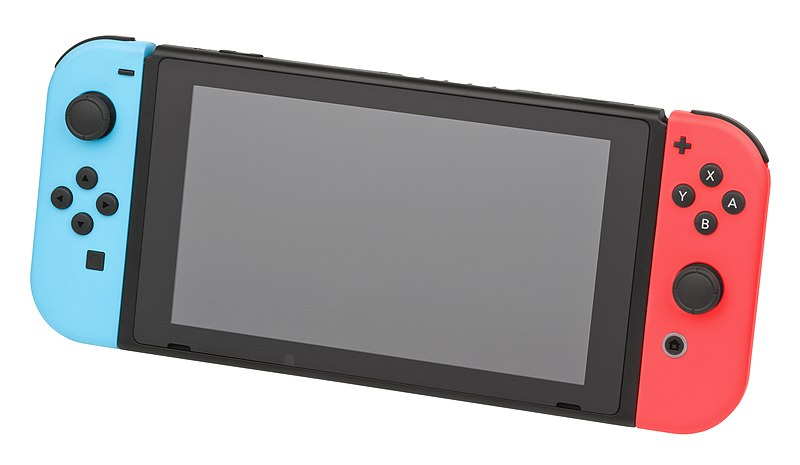

Game Boys
The DS and 3DS
Hybrid game consoles
Home consoles
Homepage
The 3DS
Hybrid Videogame Consoles
What They Are
Hybrid videogame consoles are, as the name suggests, a mix of handheld and home consoles. That means you can play on them wherever, but you can connect them to the television and play those games on the big screen.

The most well-known hybrid game console is the Nintendo Switch. It has datchable remote controllers called Joy-Cons. The Joy-Cons charge while being connected to the Nintendo Switch. They are also bluetooth wireless controllers, which can be used while docked, or while in tabletop mode.

Most sold Switch games*
Note: *The numbers may alter
- Mario Kart 8 Deluxe (55.46 million copies sold)
- Animal Crossing: New Horizon (42.79 million copies sold)
- Super Smash Bros. Ultimate (31.77 million copies sold)
- The Legend of Zelda: Breath of the Wild (30.65 million copies sold)
- Super Mario Odyssey (26.44 million copies sold)
- Pokémon Sword and Shield (25.92 million copies sold)
- Pokémon Scarlet and Violet (22.66 million copies sold)
- Super Mario Party (19.39 million copies sold)
- The Legend of Zelda: Tears of the Kingdom (18.51 million copies sold)
- New Super Mario Bros. U Deluxe (16.17 million copies sold)